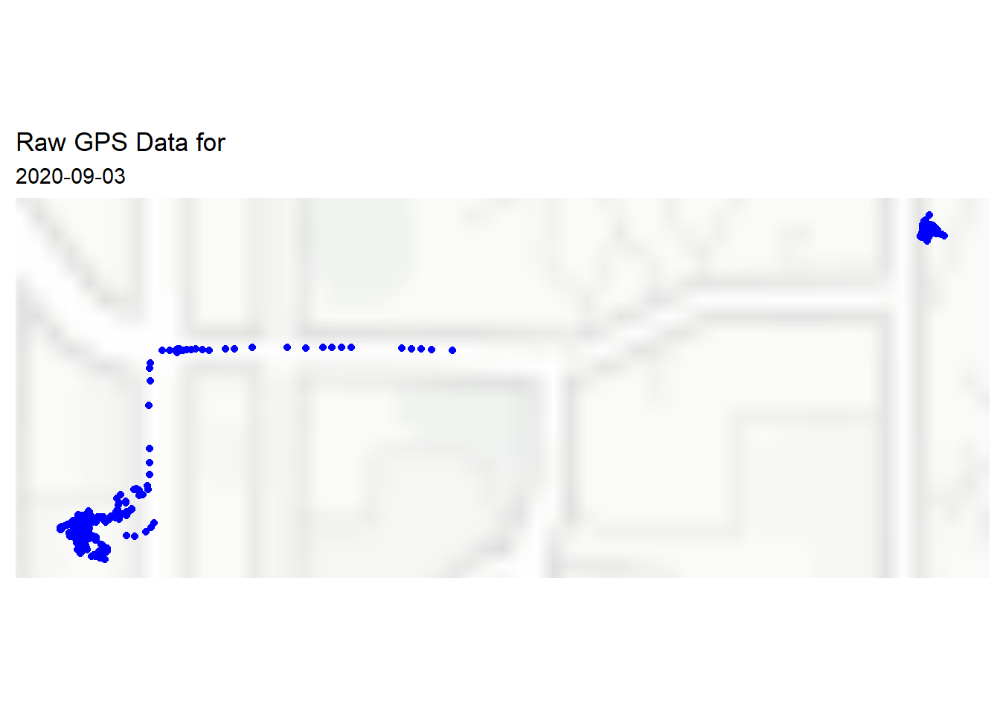

3 Findings
The hybrid algorithm returned a tibble with the parameters randomly selected for each round. In this case, 5 rounds of parameters were performed for each date. The first 10 rows of the resulting tibble, called random_clusters when one runs “tar_make()”, is shown below:
## # A tibble: 5 x 7
## eps minpts delta_t entr_t draw params clusters
## <dbl> <int> <dbl> <dbl> <int> <list> <list>
## 1 11.0 1 8.08 1.25 1 <dbl [4]> <tibble [4 x 4]>
## 2 0.170 1 70.6 2.02 2 <dbl [4]> <tibble [4 x 4]>
## 3 3.10 1 194. 1.79 3 <dbl [4]> <tibble [4 x 4]>
## 4 28.7 1 850. 1.89 4 <dbl [4]> <tibble [4 x 4]>
## 5 31.0 1 80.8 2.10 5 <dbl [4]> <tibble [4 x 4]>As seen from the random_clusters object, the number of clusters and information about those clusters are stored as tibbles in the column “clusters”. An example of the contents of one of those “clusters” tibbles is seen in Figure 1.
## [[1]]
## # A tibble: 4 x 4
## date data n clusters
## <date> <list> <list> <list>
## 1 2020-09-04 <sf [17,814 x 6]> <int [1]> <sf [148 x 6]>
## 2 2020-09-05 <sf [28,800 x 6]> <int [1]> <sf [254 x 6]>
## 3 2020-09-06 <sf [12,182 x 6]> <int [1]> <sf [31 x 6]>
## 4 2020-09-08 <sf [16,472 x 6]> <int [1]> <sf [159 x 6]>Figure 1 also shows the 10 dates that were analyzed for this report as well as the associated nested geometric GPS locations (data) and nested number of clusters (clusters). Further expanding the clusters column list in Figure 1 shows the number of clusters for that date using the parameters from the corresponding iteration. In other words, each date had its number of clusters calculated using 5 different sets of parameters.
Finally, those number of clusters (activities) were all compared to the number of clusters seen by looking at a map of the raw GPS points created using the leaflet and sf packages in R (example shown in Figure 2). The error between the algorithm’s calculated clusters for each set of parameters and the clusters seen from the maps was calculated. Whichever set of parameters consistently gave the lowest error for each date is decidedly the most accurate set of parameters to use for this DBSCAN entropy hybrid algorithm.
## [[1]]
Based on the results shown in Table 2, the parameters eps = , minpts = , delta_t, and entr_t = consistently gave the smallest errors across all 10 days. Therefore, that set of four parameters together are the most accurate to use in this kind of DBSCAN Entropy hybrid method where all four are being used simultaneously, impacting each other, in order to convert cellular GPS data into activities. An important note is that this is based on only performing 5 random iterations of parameters samples. In theory, there are many more combinations of all four of these parameters within their given ranges, so more testing could provide even more accurate results.
| eps | minpts | delta_t | entr_t | draw | date | alg_clusters | man_clusters | error |
|---|---|---|---|---|---|---|---|---|
| 11.00 | 1 | 8.08 | 1.25 | 1 | 9/4/2020 | |||
| 0.17 | 1 | 70.60 | 2.02 | 2 | 9/4/2020 | |||
| 3.10 | 1 | 194.00 | 1.79 | 3 | 9/4/2020 | |||
| 28.70 | 1 | 850.00 | 1.89 | 4 | 9/4/2020 | |||
| 31.00 | 1 | 80.80 | 2.10 | 5 | 9/4/2020 | |||
| 11.00 | 1 | 8.08 | 1.25 | 1 | 9/5/2020 |